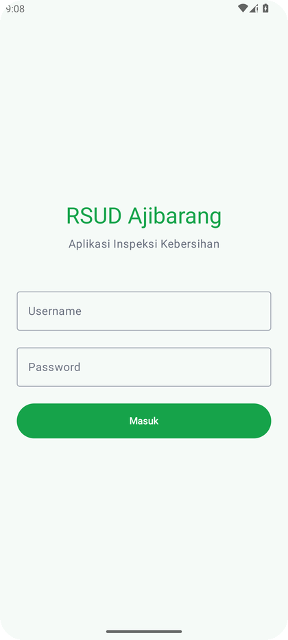
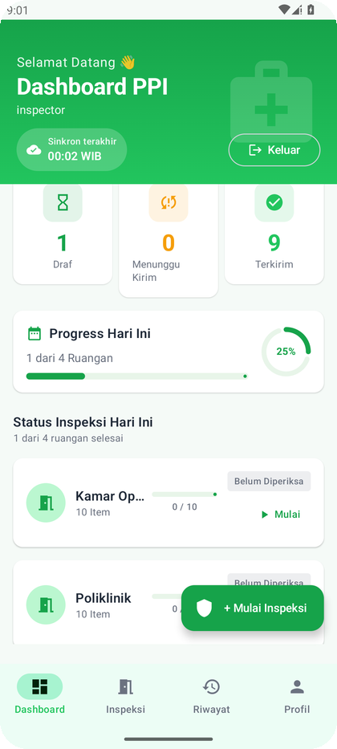
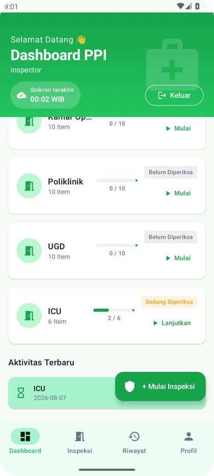
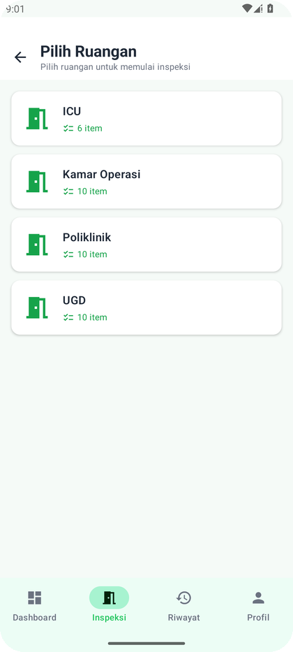
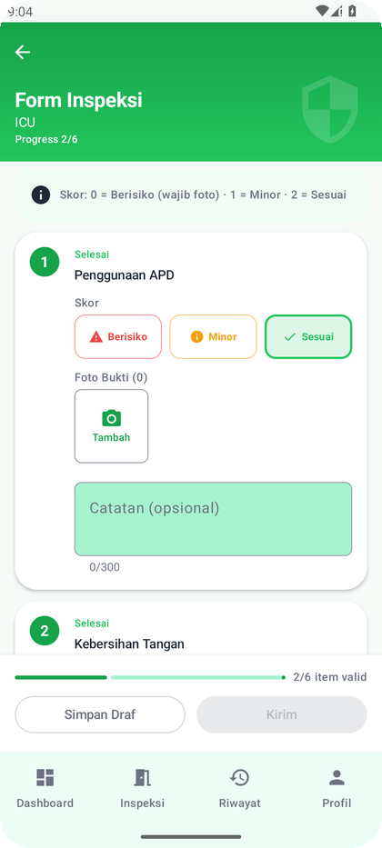
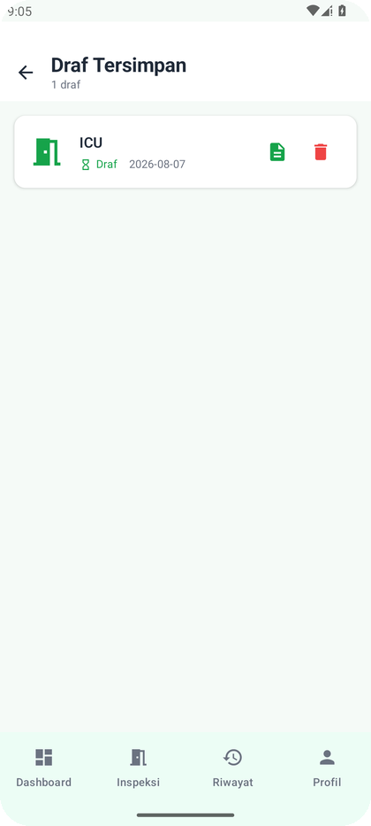
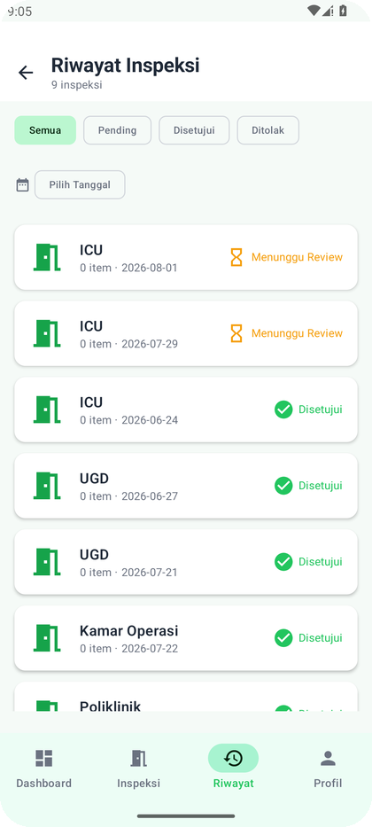
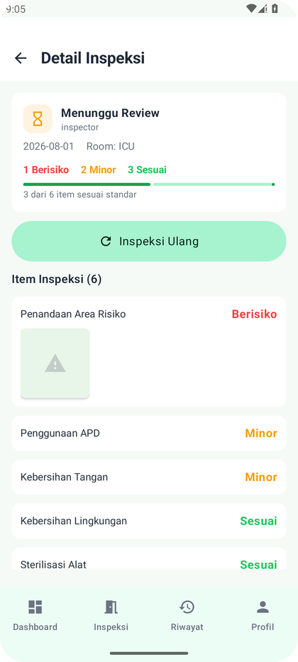

1. Tentang Aplikasi
Aplikasi ini digunakan oleh Petugas Kebersihan untuk melakukan inspeksi kebersihan harian di setiap ruangan RSUD Ajibarang. Aplikasi dirancang offline-first: data disimpan dulu di perangkat, lalu disinkronkan otomatis saat jaringan tersedia — sangat tangguh untuk area rumah sakit yang sinyalnya tidak stabil. Tampilan memakai warna hijau medis (identitas RSUD Ajibarang) yang konsisten di semua perangkat.
Fitur Utama
- ✓Form Inspeksi DinamisDaftar item kebersihan diambil dari Master Data server. Urutan item diatur oleh admin sehingga konsisten di semua perangkat.
- ✓Sistem Skoring 0–2Setiap item dinilai: 0 = Berisiko (merah), 1 = Minor Defect (kuning), 2 = Sesuai Standar (hijau).
- ✓Bukti Foto WajibSkor 0 (Berisiko) maupun 1 (Minor) wajib menyertakan minimal satu foto bukti sebelum inspeksi bisa dikirim (maksimal 5 foto per item).
- ✓Simpan DrafBelum sempat menyelesaikan? Simpan sebagai draf dan lanjutkan kapan saja.
- ✓Status Per RuanganDashboard menampilkan status tiap ruangan hari ini: Belum Diperiksa, Sedang Diperiksa, Menunggu Review, Selesai, atau Ditolak — lengkap dengan progres pengisian.
- ✓Sinkronisasi OtomatisDraf yang sudah lengkap otomatis dikirim ke server saat perangkat terhubung internet.
- ✓Riwayat & StatusPantau hasil inspeksi beserta ringkasan skor, status Pending/Menunggu Review, Disetujui (Approved), atau Ditolak (Rejected) dan alasannya.
Legenda Skor & Status
| Status | Arti | Warna |
|---|---|---|
| Draf | Tersimpan di perangkat, belum dikirim | Hijau |
| Menunggu Kirim | Lengkap & siap dikirim, menunggu koneksi | Kuning |
| Terkirim | Sudah sampai ke server | Hijau muda |
| Menunggu Review (Pending) | Sudah dikirim, menunggu peninjauan admin | Kuning |
| Disetujui (Approved) | Hasil inspeksi diterima admin | Hijau |
| Ditolak (Rejected) | Ditolak admin — ada alasan yang bisa dilihat di detail | Merah |
2. Login
Masuk menggunakan akun petugas (inspector) yang diberikan oleh admin RSUD. Aplikasi hanya menerima akun petugas — akun admin tidak bisa login dari aplikasi ini.
- 1Buka aplikasiLayar login tampil dengan judul RSUD Ajibarang — Aplikasi Inspeksi Kebersihan.
- 2Isi UsernameKetik nama pengguna akun petugas Anda (contoh: inspector).
- 3Isi PasswordKetik kata sandi. Tekan tombol Done di keyboard atau langsung lanjut ke langkah berikutnya.
- 4Tekan tombol "Masuk"Tombol hijau besar di bawah kolom password. Jika berhasil, Anda diarahkan ke Dashboard.

3. Dashboard
Dashboard adalah halaman utama setelah login. Menampilkan sapaan, ringkasan inspeksi, progres hari ini, dan status tiap ruangan. Banyak elemen yang bisa diketuk untuk membuka halaman terkait.
- 1Kepala Dashboard (header hijau)Berisi sapaan "Selamat Datang 👋", judul Dashboard PPI, nama petugas, status sinkronisasi (chip "Sinkron terakhir · jam WIB"), dan tombol Keluar.
- 2Ringkasan InspeksiTiga kartu: Draf (ketuk → daftar draf), Menunggu Kirim (jumlah draf siap kirim), dan Terkirim (ketuk → riwayat).
- 3Progress Hari IniKartu menampilkan berapa ruangan yang sudah selesai, bar progres, dan persentase lingkaran (contoh 1 dari 4 ruangan · 25%).
- 4Status Inspeksi Hari IniDaftar per ruangan dengan badge status: Belum Diperiksa (aksi Mulai), Sedang Diperiksa (Lanjutkan), Menunggu Review / Selesai / Ditolak (Lihat Hasil). Setiap baris juga menampilkan progres item (contoh 2/6).
- 5Aktivitas TerbaruDraf terakhir yang Anda simpan — ketuk kartunya untuk melanjutkan.
- 6Tombol "+ Mulai Inspeksi"Tombol melayang (FAB) hijau di pojok kanan bawah untuk langsung membuka daftar ruangan.
- 7Tarik ke bawah untuk refreshGerakan pull-to-refresh akan memuat ulang data dari server.

- ↓Gulir ke bawahBagian bawah Dashboard menampilkan status tiap ruangan dengan progres pengisiannya, serta bagian Aktivitas Terbaru berisi draf yang baru saja disimpan.

5. Pilih Ruangan
Untuk memulai inspeksi, pilih ruangan yang akan diperiksa. Daftar ruangan hanya menampilkan ruangan yang menjadi tanggung jawab Anda.
- 1Buka daftar ruanganKetuk tab Inspeksi di bilah bawah, tombol + Mulai Inspeksi di Dashboard, atau kartu Draf/status ruangan terkait. Mode "Ruangan yang belum diinspeksi hari ini" bisa dibuka dari kartu status di Dashboard.
- 2Perhatikan informasi ruanganSetiap kartu menampilkan nama ruangan dan jumlah item kebersihan yang harus diperiksa (misal 10 item).
- 3Ketuk kartu ruanganAnda langsung masuk ke Form Inspeksi untuk ruangan tersebut.
- 4Tarik ke bawah untuk refreshJika daftar ruangan kosong, pastikan perangkat terhubung internet lalu tarik layar ke bawah, atau ketuk tombol Coba Sync Ulang.

6. Form Inspeksi
Di sinilah Anda menilai kebersihan setiap item. Setiap item tampil sebagai kartu putih bernomor sesuai urutan yang diatur admin, lengkap dengan skor, foto bukti, dan catatan.
Menilai Setiap Item
- 1Baca petunjuk skorKartu kecil di atas daftar mengingatkan: "Skor: 0 = Berisiko (wajib foto) · 1 = Minor · 2 = Sesuai".
- 2Pilih skorKetuk salah satu tombol: Berisiko (0, merah), Minor (1, kuning), atau Sesuai (2, hijau). Ketuk lagi skor yang sama untuk membatalkan pilihan. Item yang sudah dinilai diberi badge Selesai (hijau).
- 3Ambil foto bukti (wajib jika skor 0 atau 1)Ketuk kotak Tambah untuk membuka kamera. Jika skor Berisiko atau Minor tanpa foto, muncul peringatan merah "Wajib diisi jika skor 0 atau 1" dan tombol Kirim terkunci.
- 4Isi catatan (opsional)Tulis keterangan tambahan seperti lokasi temuan atau penyebab, misalnya "Genangan air di pojok ruangan". Kolom menampilkan jumlah karakter (maksimal 300).
- 5Pantau progresHeader hijau dan bar di bawah menampilkan jumlah item valid vs total (contoh 2/6 item valid). Tombol Kirim baru aktif jika semua item sudah dinilai valid.
- 6Simpan Draf atau KirimBelum selesai? Ketuk Simpan Draf — data tersimpan di perangkat, bisa dilanjutkan lagi. Sudah yakin semua benar? Ketuk Kirim.

7. Draf Tersimpan
Semua inspeksi yang belum dikirim tersimpan sebagai draf. Dari sini Anda bisa melanjutkan pengerjaan atau menghapus draf yang tidak diperlukan.
- 1Buka Draf TersimpanDari Dashboard, ketuk kartu Draf atau Menunggu Kirim di Ringkasan Inspeksi.
- 2Kenali status drafSetiap kartu menampilkan status: Draf (hijau, masih dikerjakan), Menunggu Kirim (kuning, lengkap & siap dikirim), atau Terkirim (hijau muda).
- 3Lanjutkan drafKetuk ikon 📄 di sisi kanan kartu untuk membuka kembali form beserta semua skor dan foto yang sudah diisi.
- 4Hapus drafKetuk ikon 🗑️ lalu konfirmasi di dialog "Hapus Draf?". Data tidak bisa dikembalikan.
- 5Sinkronkan manualJika ada draf berstatus Menunggu Kirim, ikon sinkronisasi muncul di pojok kanan atas — ketuk untuk memicu pengiriman.
- 6Draf kosong?Layar menampilkan pesan "Belum ada draf tersimpan" dengan tombol Mulai Inspeksi untuk langsung memilih ruangan.

8. Riwayat Inspeksi
Lihat semua hasil inspeksi yang sudah terkirim ke server. Filter berdasarkan status atau tanggal untuk menemukan data dengan cepat.
- 1Buka Riwayat InspeksiKetuk tab Riwayat di bilah bawah, atau kartu Terkirim di Dashboard.
- 2Filter statusGunakan chip filter: Semua, Pending, Disetujui, atau Ditolak.
- 3Filter tanggalKetuk bar tanggal untuk memilih tanggal tertentu; ketuk ✕ untuk menghapus filter tanggal.
- 4Kenali status di kartuSetiap kartu menampilkan ikon dan label teks: ⏳ kuning Menunggu Review = Pending, ✅ hijau Disetujui, ⚠ merah Ditolak.
- 5Lihat detailKetuk salah satu kartu riwayat untuk membuka Detail Inspeksi.
- 6Gulir untuk memuat lebih banyakDaftar dimuat bertahap (pagination). Geser ke bawah untuk memuat halaman berikutnya atau tarik layar untuk refresh.

9. Detail Inspeksi
Klik kartu riwayat untuk melihat rincian satu inspeksi: status, petugas, tanggal, ringkasan skor, hasil penilaian tiap item, dan foto bukti. Jika inspeksi ditolak, alasan penolakan juga ditampilkan di sini.
- 1Baca status & info umumKartu bagian atas menampilkan status (Menunggu Review / Disetujui / Ditolak), nama petugas, tanggal inspeksi, dan nama ruangan.
- 2Lihat ringkasan skorKartu menampilkan hitungan X Berisiko · Y Minor · Z Sesuai plus bar progres dan kalimat "Z dari N item sesuai standar".
- 3Periksa alasan penolakanJika status Ditolak, alasan dari admin ditampilkan dengan teks merah, misal "Foto bukti kurang jelas".
- 4Lihat hasil tiap itemSetiap item menampilkan label skor berwarna: Berisiko (merah), Minor (kuning), Sesuai (hijau), beserta foto buktinya.
- 5Inspeksi UlangKetuk tombol Inspeksi Ulang untuk membuka form kosong bagi ruangan yang sama — berguna jika inspeksi sebelumnya ditolak.

10. Sinkronisasi & Mode Offline
Aplikasi bekerja offline-first. Anda bisa mengisi inspeksi penuh tanpa internet sama sekali — data tersimpan aman di perangkat dan dikirim otomatis begitu jaringan tersedia.
Alur Pengiriman Data
Yang Perlu Diketahui
| Indikator | Artinya | Tindakan |
|---|---|---|
| Sinkron terakhir: jam WIB | Data terakhir berhasil disinkronkan (chip di header Dashboard) | — |
| Menyinkronkan… | Proses kirim/terima data sedang berjalan | Biarkan, jangan matikan aplikasi |
| Sync gagal — ketuk untuk mencoba lagi | Gagal mengirim (mis. jaringan bermasalah) | Ketuk baris/chip tersebut untuk mencoba ulang |
| Menunggu Kirim (kuning) | Draf lengkap menunggu jaringan tersedia | Tidak perlu apa-apa — kirim otomatis |
11. Tips & Tanya Jawab
✅ Tips Agar Inspeksi Cepat & Lancar
- ✦Buka aplikasi saat jaringan stabilMaster Data (daftar ruangan & item) diunduh otomatis saat login. Pastikan sesekali online agar data terbaru.
- ✦Simpan draf secara berkalaJangan khawatir kehilangan data — ketuk Simpan Draf sesering yang Anda mau; semua tersimpan di perangkat.
- ✦Foto di area cukup terangFoto yang jelas mempercepat peninjauan admin dan mengurangi risiko penolakan.
- ✦Isi catatan untuk temuan pentingMisalnya lokasi persis temuan — sangat membantu admin memahami kondisi.
- ✦Jangan inspeksi ruangan dua kaliGunakan daftar status per ruangan di Dashboard agar tidak melewatkan atau mengulang ruangan.
❓ Tanya Jawab Singkat
| Pertanyaan | Jawaban |
|---|---|
| Apakah bisa mengisi inspeksi tanpa internet? | Bisa. Semua data disimpan lokal sebagai draf dan dikirim otomatis saat online. |
| Kenapa tombol "Kirim" tidak bisa ditekan? | Masih ada item yang belum dinilai, atau item Berisiko (0) / Minor (1) belum dilampiri foto bukti. Periksa bar progres di bawah form. |
| Apa bedanya "Simpan Draf" dan "Kirim"? | Simpan Draf hanya menyimpan di perangkat (belum dikirim). Kirim menyimpan sekaligus mengirim ke server saat jaringan tersedia. |
| Inspeksi saya ditolak, apa yang harus dilakukan? | Buka Detail Inspeksi, baca alasan penolakan, lalu ketuk Inspeksi Ulang untuk mengisi form baru pada ruangan yang sama. |
| Foto hasil kamera kok cepat dikirim? | Foto dikompres otomatis di perangkat (maks ±300 KB) sebelum diunggah — hemat kuota dan lebih tahan terhadap jaringan lambat. |
| Bisa pakai beberapa foto per item? | Bisa. Setiap item mendukung hingga 5 foto bukti. |
| Bagaimana cara keluar dari akun? | Ketuk tombol Keluar di pojok kanan atas Dashboard, atau lewat tab Profil di bilah bawah. |